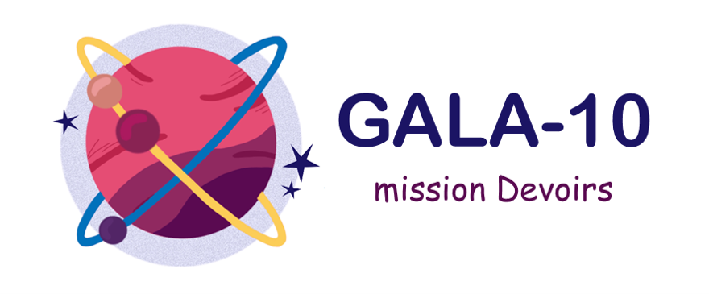

Réglages

Bienvenue sur Gala-10
Embarquez vers la première plateforme d'aide aux devoirs accessible à tous les enfants
Vous êtes Parents d'enfants touchés par la dyslexie, enseignants, professionnels de santé... Rejoignez l'équipage.
Ajout de documents scannés ou photographiés
Reconaissance de caractères et retranscription en version "dyslexique"

Visualisation des progrès